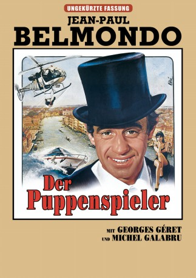

#7029 Der Puppenspieler
 
 IMDB-Wertung: 6.0 / 10
IMDB-Wertung: 6.0 / 10  Metascore: 0
Metascore: 0 
Der Ganove Alexandre Dupré wird aus der Haft entlassen und macht sich gleich an neue Gaunereien. Unter anderem klaut er einen Koffer, in dem sich eine wichtige Geheimformel befindet. Nun wird er nicht nur von der Polizei, sondern auch von Geheimdiensten und Gangstern verfolgt.
Jahr: 1980
Dauer: 107 Minuten
FSK: 12
Land: Frankreich Studio: TobisTonspuren:
Untertitel: Deutsch,
Auflösung: 1080p (1808x1080) Größe: 8673 MB
Genre: Action, Komödie
Regisseur: Georges Lautner
Drehbuch: Jean Herman
Soundtrack:
Darsteller:
 Jean-Paul Belmondo als Alexandre Dupré
Jean-Paul Belmondo als Alexandre Dupré- Mirella D'Angelo als Sophie / Pamela
 Paolo Bonacelli als Kamal
Paolo Bonacelli als Kamal- Henri Guybet als Machavoine - le 'plombier'
 Michel Galabru als Achille Sureau
Michel Galabru als Achille Sureau- Georges Géret als Le commandant Joseph
- Carla Romanelli als Gina
- Von Gretchen Shepard als Caroline
- Pierre Vernier als Helmut Von Nassau
- Michel Beaune als Louis Fréchet
- Tony Kendall als Fredo
- Maurice Auzel als La Franchouillard
- Lily Fayol als La Schwartz
- Philippe Castelli als Le concierge
- Charles Gérard als Abdel Fahrad
- Anne Goddet als Irène
- Jean-François Calvé als Le Ministre
- Jean Luisi als Un gardien prison
- Renzo Marignano als Le bijoutier
- Enzo Guarini als Le commissaire
- Aldo Rendine als Urbino Alfonsi
- Michel Berreur als Hussein
- Dona Leigh Kessler als La blonde
- Daniel Breton als Yasser
- Ham-Chau Luong als Ohsawah
- Thang-Long als Taramushi
- Jacques Ramade als Le serveur qui tousse
- David Gabison als Le directeur de la prison
Datei: X:\1980\Puppenspieler, Der (1980, FSK12, 1808x1080).mkv seit 18.09.2017
Festplatte: HD 1980-1986
 Es gibt insgesamt 33 Filme in der Gruppe '1980'
Es gibt insgesamt 33 Filme in der Gruppe '1980'